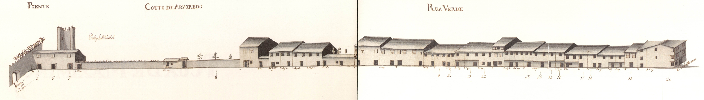

Rua Verde - nascente.
Rua Verde - poente.
Longa rua, com início no postigo de S. Sebastião e fim na rua de Maximinos. O seu traçado prolongava-se, porém, até à Porta de S. Francisco, através das ruas dos Sapateiros e do Campo.
Decalcando, uma rua da cidade romana, era esta a mais ocidental das artérias intra-muros da velha urbe medieval.
Ponto privilegiado nas ligações com Maximinos e a capela de S. Sebastião, o seu traçado foi no séc. XIX (inícios?) violentamente rompido com a continuação da rua das travessas, que, abrindo uma brecha nas muralhas, a ligou com o campo de S. Miguel o Anjo; no fim do mesmo século, por volta de 1880, foi alargada, sendo destruídas todas as casas, excepto uma, de dois pisos, no seu extremo Norte, recebendo então o nome de D. Frei Caetano Brandão.
Em 1750 apresentava-se dividida em duas: uma, a Norte da rua das Travessas com o nome de rua Verde; outra, a Sul, chamada somente Couto do Arvoredo.
O Couto do Arvoredo estava parcialmente construído (ainda hoje, aliás, do lado Este conserva os quintais; e os do Oeste só nos anos 60 e 70 do nosso séc. foram ocupados com habitações), com casas simples, de 2 pisos, de um tipo mais frequente fora de muralhas, nos arrabaldes, sem varandas e com as janelas apenas tapadas por portas de madeira.
A rua Verde, embora apresente um tipo de casa também muito simples, e de contrução sem dúvida arcaica, estava já em 1750 toda construída. Mantém, todas as casas apenas com dois pisos (excepto duas), com aberturas predominantemente tapadas por portadas de madeira, raríssimas gelosias e varandas e algumas casas com janela do tipo bracarense. Muito curiosos são os primeiros cinco edifícios do lado Nascente e uma boa parte dos do Poente: são geralmente de dois vãos, 2 pisos, porta no rés do chão e 2 janelas no andar, com um ritmo bem marcado e, sobretudo, com o sobrado muito pronunciado, mostrando bem a fragilidade dos seus materiais construtivos.
Das 24 casas do lado Nascente e 33 do Poente, 3 e 13 são, respectivamente, prazos do Cabido.
| Número: 1 | Enfiteuta: Maria Catarina do Céu, religiosa do Salvador | Foro: 170 reis e 2 galinhas | Descrição: Confronta, do sul, com casa foreira à cororaria. |
| Número: 2 | Enfiteuta: Faustina Pereira | Foro: 180 reis e 1 galinha | Descrição: Confronta, do norte, com casa foreira à cororaria. Entre os anos de 1670 e 1724 esteve unida ao n.º 3. |
| Número: 4 | Enfiteuta: N/A | Foro: N/A | Descrição: Corresponde, desde o ano 1627, à casa n.º 12 da Rua de St.º António. Encontra-se situada defronte do postigo de S. Sebastião. |
| Número: 5, 6 e 7 | Enfiteuta: António Pereira, sapateiro | Foro: 100 reis e 1 galinha | Descrição: Encontram-se situadas junto ao postigo de S. Sebastião e foram construídas, antes de 1563, no «lugar do Sabugal», pertencente ao n.º 12 da Rua de Sto. António. |
| Número: 8 | Enfiteuta: Teresa da Costa, viúva de António Pereira | Foro: 2 galinhas | Descrição: Quintal denominado do Sabugal, que foi de José de Araújo Teixeira. |
| Número: 9 e 10 | Enfiteuta: Salvador Pinto, guarda da Sé | Foro: 220 reis e 2 galinhas | Descrição: Estão unidas, num só prazo, desde o ano de 1549. A casa n.º 9, confronta, do sul com casa foreira ao Hospital de S. Marcos. |
| Número: 11 | Enfiteuta: N/A | Foro: N/A | Descrição: Paga pensão à obra da Sé. São enfiteutas os herdeiros de Maria Ribeiro, que pagam 80 reis de foro. |
| Número: 12 | Enfiteuta: José Pereira, sapateiro | Foro: 95 reis e 1 galinha | Descrição: O enfiteuta foi dotado com esta casa. |
| Número: 14 | Enfiteuta: Padre Matias de Lemos | Foro: 30 reis e 2 galinhas | Descrição: Entre os anos de 1609 e 1640 pertenceu ao n.º 13. |
| Número: 17 e 18 | Enfiteuta: Os herdeiros de Duarte Mendes de Oliveira | Foro: 1 galinha | Descrição: Confrontam, do Sul, com casas foreiras ao Hospital de S. Marcos. |
| Número: 19 | Enfiteuta: Manuel Vieira | Foro: 225 reis e 2 galinhas | Descrição: Estas casas tinham pertencido a Isabel da Silva e, anteriormente, a Julião Lopes. |
| Número: 20 | Enfiteuta: N/A | Foro: N/A | Descrição: Corresponde ao n.º 12 da Rua de Maximinos, para onde tem a fronteira e serventia principais. |